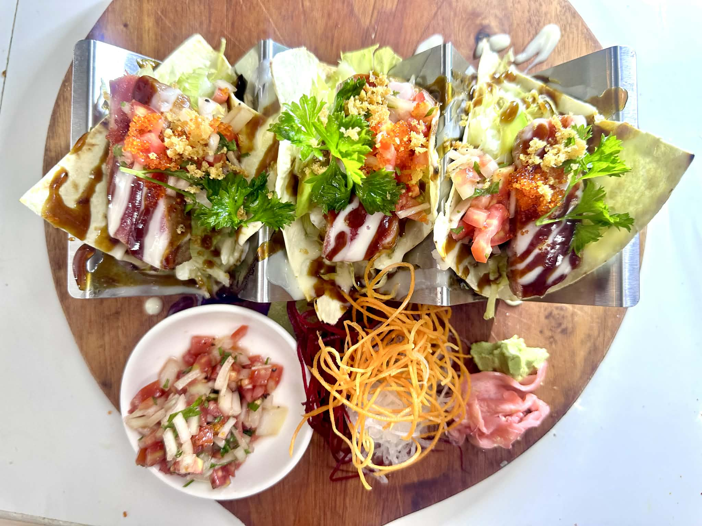
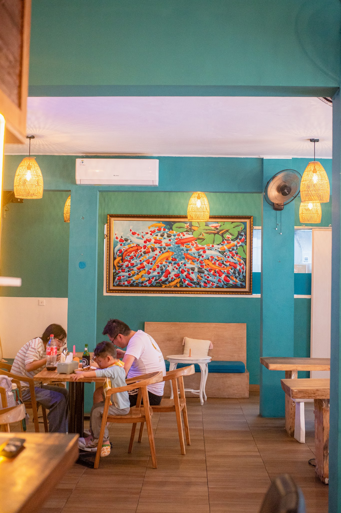
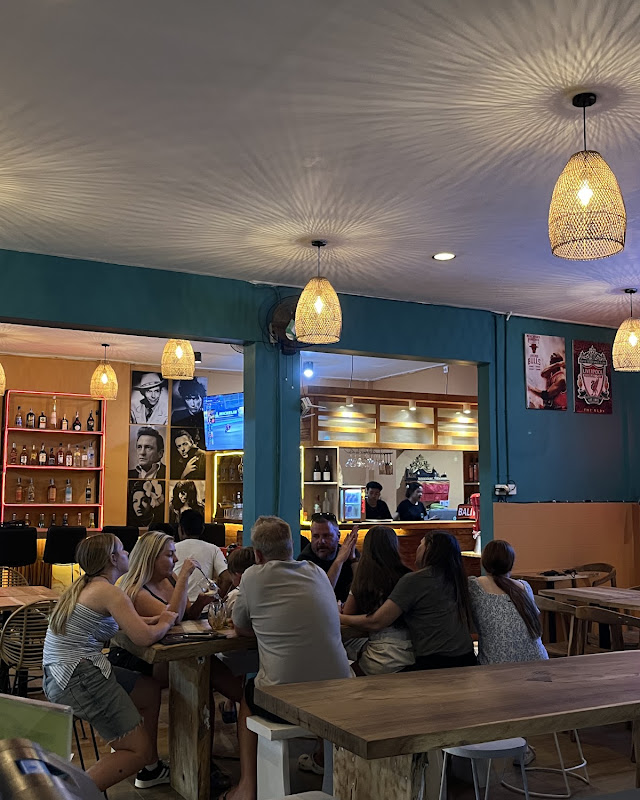
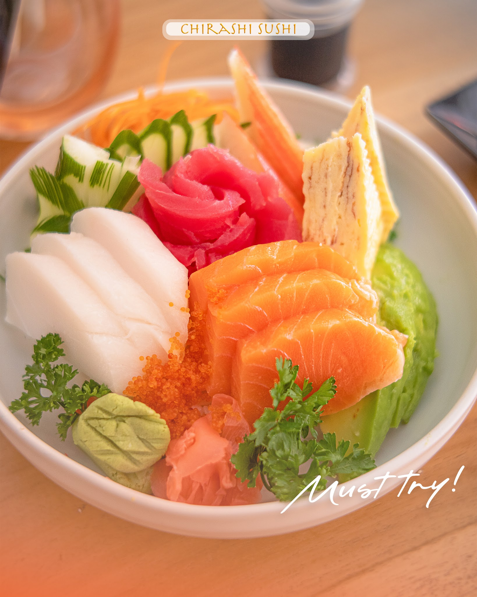
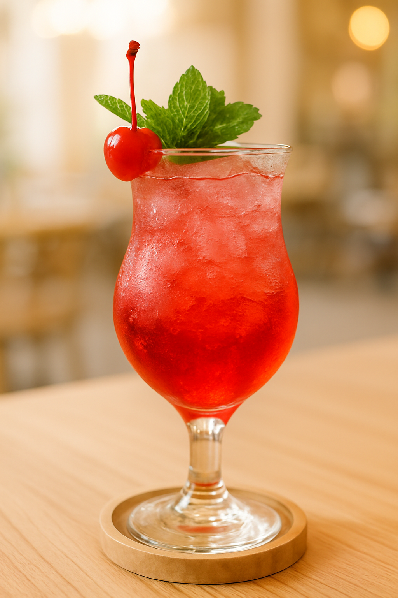
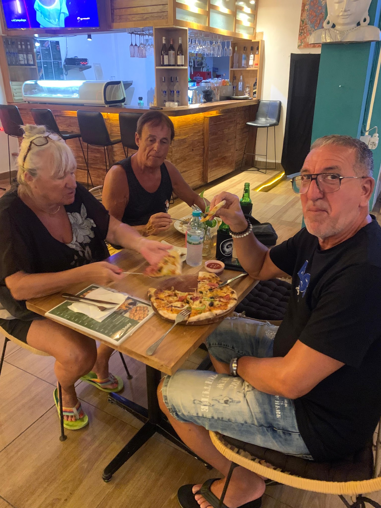
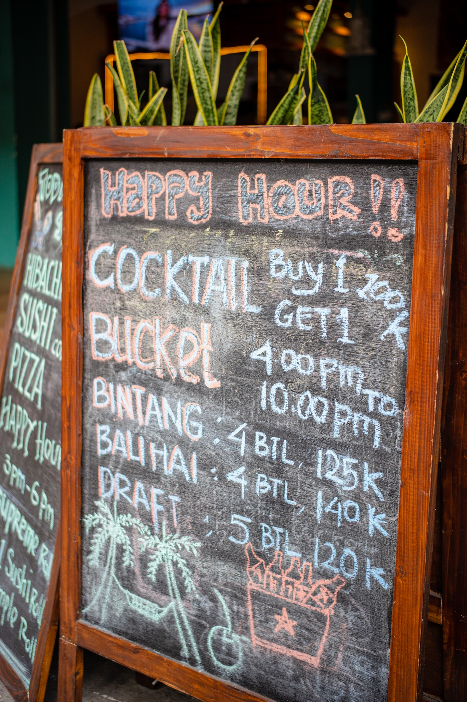
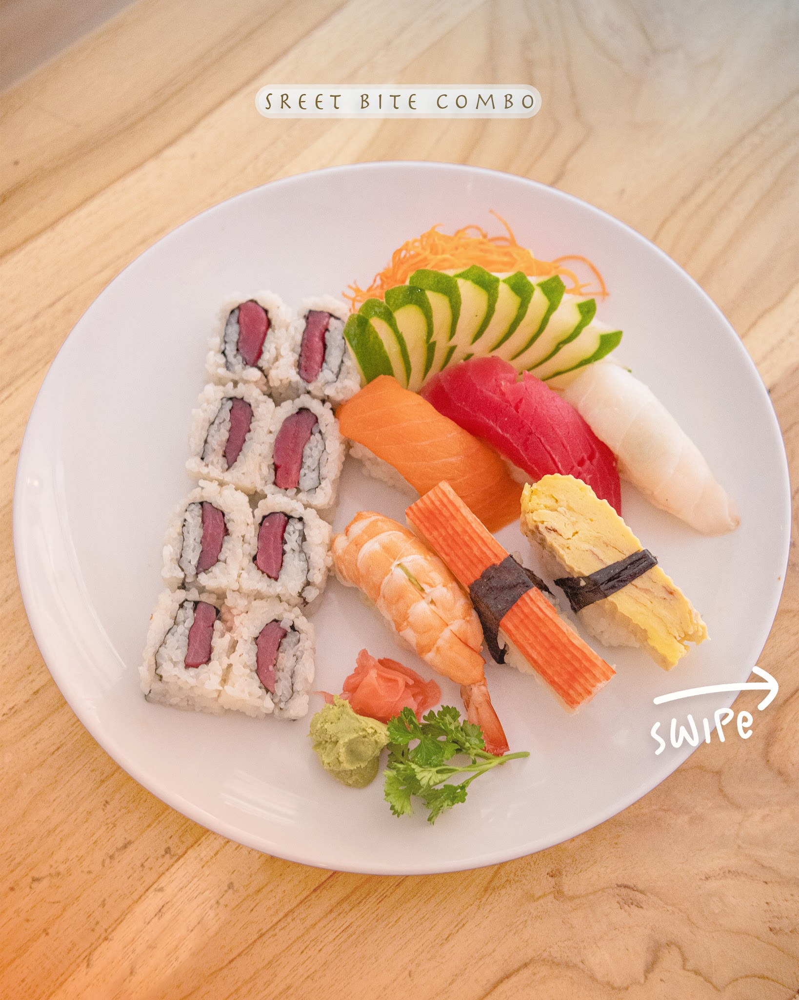
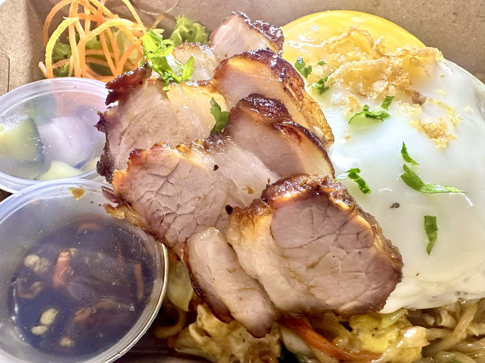
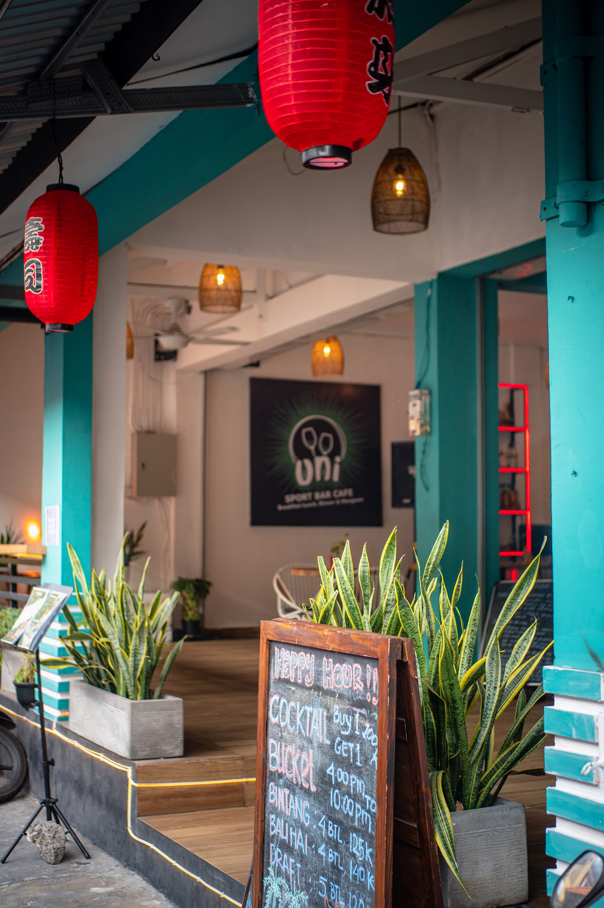

FOOD

KUTA · BALI
Your casual sport bar in Kuta for cold drinks, great food, live atmosphere and the matches worth staying up for.
THE UNI EXPERIENCE
UNI brings together the easy-going energy of a Bali café with the atmosphere of a proper sport bar. Come for a meal, settle in for the game, or meet friends for a drink and let the night take its own pace.

FOOD & DRINKS
Easy-going plates, Asian-inspired favourites, sushi, snacks and drinks made for sharing.




SPORTS ON
Bring your crew, grab a drink and settle in. UNI is built around the social side of sport — the food, the noise and the moments everyone remembers.
Ask what's on →WHAT'S HAPPENING
From happy hour and live music to match-day specials, there is always another excuse to meet at UNI.

INSIDE UNI



FIND UNI
Jl. Benesari, Kuta, Badung, Bali 80361, Indonesia.
+62 895-4216-45000
contact@unicafebali.com